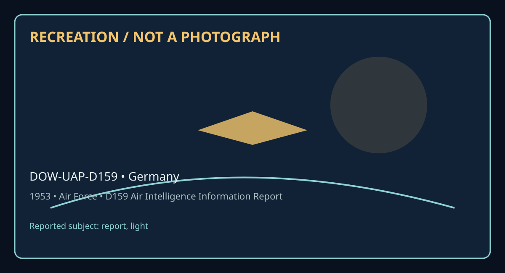

Release 07 / archival case file / DOW-UAP-D159
D159 Air Intelligence Information Report Germany 1953
This d159 air intelligence information report places a report, light thread in a 1953 Germany record.
ID: DOW-UAP-D159
Filename:
DOW-UAP-D159-Air_Intelligence_Information_Report_Germany-1953.pdfDate marker: 1953
Location: Germany
Agency or collection signal: Air Force
Pages read: 2

RECREATION / NOT A PHOTOGRAPH. The diagram is an interpretive editorial aid, not source imagery.
What this document says
The opening page's extracted text begins: “AF FORMt112-PART I APPROVED I JUNE 1948 CO~NTRY GERlWiY 260-5 SUBJECT AIR INTELLIGENCE INF EXTRACTS FROII AIR TIW'FIC CaffROL LOGS AREA REPORTED ON FROM (A9'/>cr) SOVIE!' ZOIE GERWY 73501'H BASE COMPLU!N'r SQOlDROI DATEOF REPORT 11 AUGUST 1953 PREPARED BY (O}ftctr) ItVAlUATION lfONE FRED L. ALLEN C.AFT. USAF ISOURCE AIR TBAn'IC COlfTROLLER REFERENCES ( Co•lrol nu ,.btr, dirtdirt, prtoiou, report, de., a, applicabl•) SUMMARY: (lrnler ..,,,;,. •umm•r11 ofr<port. Gioe •i,nlfitana In final 01,uc,uenu paragraph. Lut lnclo.urta at IOllitr left. Bttln tat ofrtport on AF Form IJt-Part Il.) The followi11g information•• extracted f'l'OII Air Trattic Control Loga, TEMPELHOF, 11 August 1953. 10 August 1953: 1936Z hours: 2245Z hOUl'IIS British European Airways DC-.3 type ilrcraf't, GALJI, flJing inbound for TEIIPELHOF via Center Corridor reported obiHrrl.ng what appear.d to be red colored rockets, behg ti.red approrl.llately ane (1) mle in tront ot hia, • Bat Eisen lir Tratfic Control reported the following 1nt'oraat1on to T!MPELHOF Air Tra.tfic Control: The pilot of British European Airways 00•3 t1pe Aircraft, GA.GIP, reported sighting a stationary red colored light twenty ( 20) nautical miles West of Gentbin ( 5224B/1209E). Light appe&Nd to be at approximateI.y 5,000 feet but not abo"9 5,500 teet. 2315Z houras British Berlin Air Satety Center reported that the SOYiets checked on this repo”
Across the 2 pages, the recurring terms are report, light. Those details belong to this file, not to a generic case template. Page-level reading follows:
- Page 1: AF FORMt112-PART I APPROVED I JUNE 1948 CO~NTRY GERlWiY 260-5 SUBJECT AIR INTELLIGENCE INF EXTRACTS FROII AIR TIW'FIC CaffROL LOGS AREA REPORTED ON FROM (A9'/>cr) SOVIE!' ZOIE GERWY 73501'H BASE COMPLU!N'r SQOlDROI DATEOF REPORT 11 AUGUST 1953 PREPARED BY (O}ftctr) ItVAlUATION lfONE FRED L. ALLEN C.AFT. USAF ISOURCE AIR TBAn'IC COlfTROLLER REFERENCES ( Co•lr
- Page 2: AF FORM 112-PART II 3 APPROVED I JUNE 1~48 l 68 Nil=~~f11Al AIR INTELLIGENCE INFORMATION REPORT FROM (;lgrncv) REFORT NO. 0 BASE COMPLEMENT SQ. .PAGE 2 OF 2 PAGES B<1l'E; .A.a of thie report, thie office has been unable to contact Pan American Airlines Pilot Lesser to gain any further inforaation. ~'t{~~ Capt. USAF Air Intelligence Officer LIBRARY SUBJECT a
Historical context and disclosure schema
Read in context, this record belongs to the 1953 information environment: Air Force paperwork, a Germany setting, and the reporting conventions visible in the source. Its broader disclosure value is procedural as well as anecdotal: it shows how an observation, material question, investigation, or analytical program was routed, described, and preserved. That makes it comparable to other Release 07 records without collapsing unlike evidence into one event.
Evidence limits
The source establishes that this document exists and records what its authors or quoted witnesses wrote. It does not, by itself, prove the identity, performance, origin, or physical reality of the reported subject. Extraction preserves wording but cannot restore missing attachments, authenticate provenance, or independently validate testimony. Interpretations beyond the page-specific record remain hypotheses.
Source: supplied PDF in research/tranche-07. This article is a research aid, not a claim that the reported object was non-human.